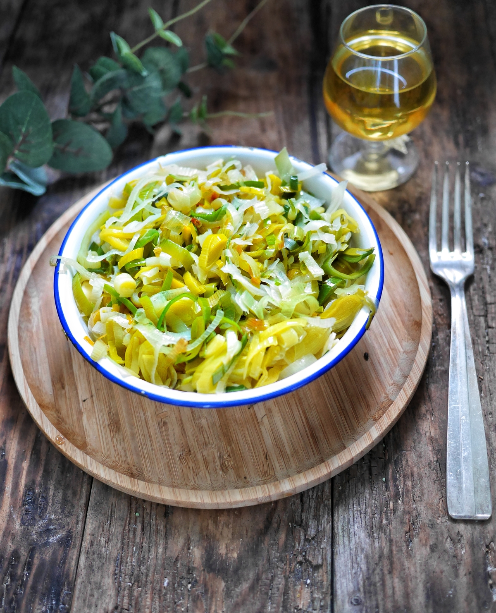

Fondue de poireaux

Description
Un plat classique est très facile à faire !
Ingrédients
- Un poireau
- Une briquette de crème liquide
- Sel & poivre
- Une épice de votre choix
- Du beurre
Etapes de la recette
- Emincez votre poireau
- Chauffez votre poelle
- Ajoutez le beurre et attendez qu'il prenne une couleur noisette
- Ajoutez le poireau et faites le revenir
- Mettez à feu doux et couvrez pendant 15 minutes
- Le poireau doit être "mou"
- Ajoutez la crème fraîche, le sel, le poivre et l'épice de votre choix
- Faites réduire un peu et servez ! Accompagnez avec des pâtes
Retour au menu